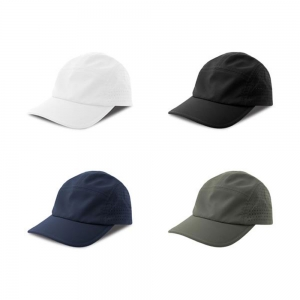
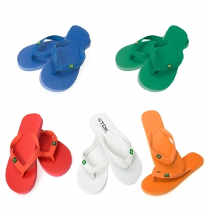
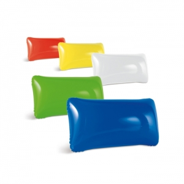
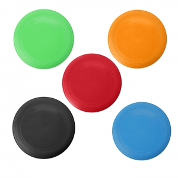
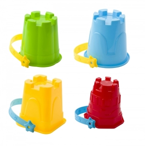

Atividades e percursos de utilização
Uma visita turística, uma sessão desportiva, um festival e um dia de praia têm transportes, permanências e locais de entrega diferentes. Escolha pelo percurso: levar, utilizar, limpar e voltar a guardar.
Não se estabelece neste guia uma tradição histórica comum de oferecer brindes de Verão. Turismo, lazer e campanhas sazonais têm contextos próprios; não foi encontrada, nas fontes selecionadas, uma origem única que justifique essa afirmação.
Quem prepara a ação e quem recebe
Equipas de alojamento podem acolher hóspedes; associações e municípios podem apoiar atividades; clubes e organizadores podem preparar materiais para participantes e voluntários. Distinga quem chega de viagem de quem permanece no recinto.
Acolher, informar e identificar são objetivos diferentes. Um material de orientação pode ser mais pertinente na chegada; uma recordação pode ser avaliada no final, quando a pessoa já conhece o peso e o espaço de que dispõe.
Exemplos de artigos e razões de escolha
Garrafas e recipientes: podem acompanhar uma rotina de bebida quando há condições para os encher e limpar. Observe abertura, transporte e utilização indicada. A capacidade, a tampa ou a aparência não comprovam estanquidade ou conservação térmica.
Sacos e bolsas: podem reunir objetos num passeio ou organizar equipamento numa viagem. Escolha pela dimensão do conteúdo e pelo acesso; não deduza proteção contra água, areia ou quedas pelo nome da bolsa.
Bonés, t-shirts e toalhas: podem apoiar identificação de equipa ou uma atividade de lazer. Avalie ajuste, medidas e cuidados; a utilização ao sol não demonstra proteção solar.
Jogos e acessórios de exterior: relacione-os com espaço, tempo de preparação e possibilidade de guardar depois da atividade. Uma cadeira ou saco volumoso pode ser inadequado para quem se desloca a pé ou tem bagagem limitada.
Exemplos em contexto
Estes exemplos relacionam objetos com uma utilização concreta. A escolha depende de quem participa e das condições da atividade; as imagens não comprovam materiais, desempenho ou adequação.
Chinelos quando o uso é conhecido

Contexto
Uma oferta ligada a estadia ou lazer em que se
conhecem o tamanho e as condições em que a pessoa pretende usar o calçado.
Razão da escolha
Podem corresponder a uma necessidade concreta
de uso pessoal e ocupar pouco espaço numa apresentação. Perdem pertinência se o
tamanho ou o contexto forem desconhecidos.
Aspetos a confirmar
Verifique medidas, ajuste, sola e
instruções para as superfícies previstas. A associação a praia ou piscina não
demonstra aderência em piso molhado. A personalização deve ser avaliada sem
comprometer a utilização.
Almofadas insufláveis para pausas e viagens

Contexto
Uma deslocação ou pausa em que o destinatário
valoriza poder guardar o objeto com pouco volume, se essa for uma característica
confirmada do artigo.
Razão da escolha
A forma de encher, esvaziar e guardar faz
parte da escolha. Pode ser mais útil para quem o transporta consigo do que um objeto
volumoso que fica sem utilização no percurso.
Aspetos a confirmar
Confirme dimensões em uso, válvula, método
de enchimento, limpeza e armazenamento. Não apresente uma almofada como equipamento
de flutuação ou proteção aquática; a aparência insuflável não demonstra essa
finalidade.
Discos para uma atividade recreativa

Contexto
Uma atividade de grupo num espaço onde a organização
tenha previsto área e regras de jogo.
Razão da escolha
O artigo pode ser usado durante a própria
iniciativa, em vez de ficar apenas como recordação. Antes de preparar uma entrega
individual, avalie se materiais partilhados no local cumprem o mesmo objetivo.
Aspetos a confirmar
Considere o espaço de utilização, outros
participantes, instruções e arrumação depois do jogo. Não atribua idade indicada ou
resistência pelo aspeto. Para brinquedos, a orientação europeia recomenda respeitar
idade, capacidades e supervisão.
Fonte
Conjuntos para brincar na areia

Contexto
Uma atividade de praia ou de areia preparada para
crianças acompanhadas, com escolha do conjunto pelo adulto responsável.
Razão da escolha
Pode dar suporte a uma tarefa concreta, como
construir e moldar em grupo. A utilidade depende do local e de como as peças são
reunidas e guardadas; não é uma oferta necessária em todas as visitas.
Aspetos a confirmar
Confirme idade indicada, peças incluídas,
avisos e forma de limpeza. A orientação europeia recomenda respeitar as indicações e
acompanhar a utilização dos brinquedos. Não deduza aptidão para contacto com
alimentos nem função de proteção na água.
Fonte
Calor, sol, água e alimentação
As recomendações da DGS para o calor incluem informação sobre hidratação e exposição solar. Fonte A organização deve consultar a orientação atual para a atividade; distribuir um artigo não equivale a assegurar proteção ou condições de saúde.
Confirme instruções de exposição, limpeza e armazenamento do artigo concreto. Num recipiente de refeição ou bebida, o contacto alimentar e a temperatura permitida não se deduzem do material aparente. Se o uso exigir proteção solar ou resistência à água, procure documentação específica.
Entregar no momento em que faz sentido
Mapeie pontos de chegada, atividade e saída. Um objeto entregue cedo pode acompanhar a atividade, mas também aumentar o que a pessoa transporta; uma entrega final pode ser mais simples se não for necessário durante o programa.
Confirme acesso ao recinto, armazenamento e entrega por grupos ou turnos. Valide, por projeto, aprovação da arte, preparação, montagem e transporte. Não presuma um prazo universal nem um calendário turístico igual em todos os destinos.
Utilidade, participação e responsabilidade
A reutilização e a utilização prolongada integram o enquadramento de economia circular. Fonte Verifique se há condições reais de limpeza, transporte e uso posterior, em vez de tratar a palavra reutilizável como prova de menor impacto.
Considere embalagem, recolha de sobras e destino no fim de vida. Permita participar sem receber um artigo e reveja idiomas e acessibilidade da mensagem para visitantes.
Se avaliar a ação, distinga quantidade entregue de utilização observada. Registe como recolheu opiniões e a quem perguntou; esses dados não demonstram automaticamente efeitos em vendas ou fidelização.
Mensagem que acompanha o uso
Num saco ou boné, observe a posição do desenho com o objeto utilizado. Numa garrafa, avalie a área exterior e a leitura ao segurar, preservando zonas de contacto e informação técnica.
Confirme a técnica, o acabamento e os cuidados do conjunto personalizado. O comportamento documentado do objeto sem personalização não permite concluir o comportamento de qualquer aplicação.
Perguntas frequentes
Um boné promocional garante proteção solar?
Não. A imagem ou a utilização em atividades de Verão não comprovam esse desempenho.
Uma garrafa resolve o planeamento de hidratação de um evento?
Não. A disponibilidade de bebida, o local e a atividade exigem organização própria e consulta das orientações pertinentes.
Um artigo reutilizável tem sempre menor impacto?
Não se estabelece uma conclusão sem âmbito e avaliação. Considere produção, transporte, uso, cuidados e destino final do artigo concreto.